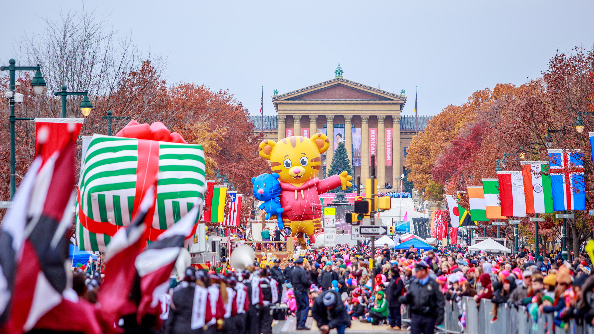

Thanksgiving Day
Thanksgiving Day adalah hari perayaan nasional yang diadakan pada tanggal berbeda tiap negara. Festival ini diadakan Senin kedua pada bulan Oktober di Kanada dan Kamis keempat pada bulan November di Amerika dan Brazil.
Hari Thanksgiving, hari libur nasional tahunan di Amerika Serikat dan Kanada merayakan panen dan berkah lainnya tahun lalu. Orang Amerika umumnya percaya bahwa Thanksgiving mereka dimodelkan pada pesta panen tahun 1621 yang dibagikan oleh penjajah Inggris di Plymouth dan orang-orang Wampanoag. Liburan Amerika sangat kaya akan legenda dan simbolisme, dan makanan tradisional dari jamuan Thanksgiving biasanya termasuk kalkun, isian roti, kentang, cranberry, dan pai labu.
